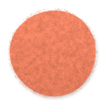

Bio
Hollie Col is a singer-songwriter from Sydney, Australia, writing warm, guitar-led pop-folk built on storytelling.
Releasing music since 2018, she has passed 9 million Spotify streams and 30 million YouTube views, with 116,000 YouTube subscribers and 30,000 Spotify followers. Her catalogue keeps finding new listeners: ‘Let Yourself Down’ has 3.4 million streams and ‘She Knows’ 2.9 million, while recent single ‘Two Step Plan’ has passed 1.3 million YouTube views. Most of her audience is in the United States, across YouTube, Instagram and Spotify.
Read full bio
Her songs often explore LGBTQIA+ themes, brought to life in cinematic, self-directed music videos. Her 2022 EP Julia Stevens told a single story across a series of music videos and a short film. She has received triple j airplay across multiple singles, editorial Spotify playlist support, and coverage from Billboard, Tone Deaf and The AU Review. Her production collaborators include Dylan Nash (Dean Lewis, Angus & Julia Stone) and Andy Mak (Vera Blue).
Now she returns with Glitter, her most cohesive and personal work yet: Rumours-era layered production, earthy drums and Fleetwood-esque chord progressions through a sharp, contemporary songwriting lens. Its first singles, ‘I’ll Be There’ and ‘The Gambler’, are out now, with ‘Flight Risk’ following on 11 December.
- From
- Sydney, Australia
- Genre
- Pop-folk, singer-songwriter
- For fans of
- Fleetwood Mac, Maggie Rogers, HAIM, Taylor Swift
- Latest
- ‘I’ll Be There’ and ‘The Gambler’ (2026)
- Next single
- ‘Flight Risk’, 11 December 2026
- Radio and press
- triple j, Billboard, Tone Deaf, The AU Review

What’s next
- 11 December 2026‘Flight Risk’New single from Glitter
- Early 2027Glitter EPOut with ‘I’ll Be There’ and ‘The Gambler’
- 2027Australian showsHeadline dates to be announced
- July 2027European festivalsFestival slots planned
- Late 2027Second EPFollow-up to Glitter
Live
Headline
Multiple sold-out headline runs across Australia (300 capacity), with an Australian headline tour planned for 2027.
Europe and UK
A 30-date European and UK support tour with Kim Churchill (2024), plus European and UK dates with Sons of the East and Harrison Storm.
Supports in Australia
Kodaline, The Rubens, Dan Sultan, Pete Murray, Sons of the East, Winterbourne and more.
Press photos


Listen
Get in touch
For bookings, press and support enquiries: holliecol@outlook.com